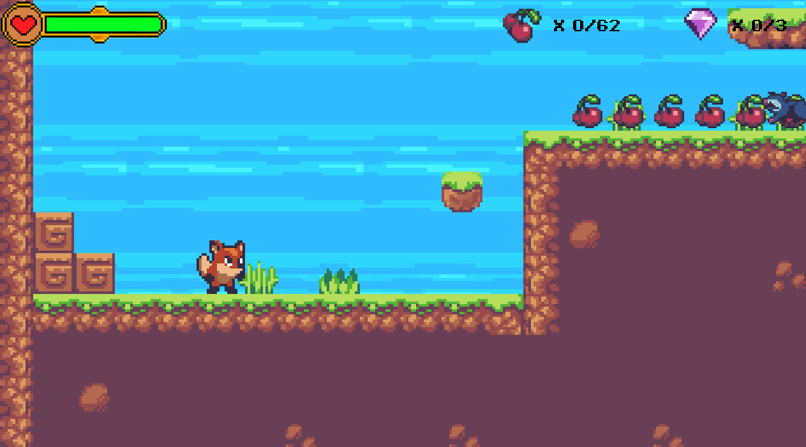

Haydar Beydoun
Computer Science Student
Summary
As a Bachelor of Science Honours Computer Science Co-op with a specialization in Software Engineering student, I am passionate about utilizing different technologies to solve real-world problems and create a positive impact on the world.
My interest in programming stems from the desire to continuously innovate, improve, and develop new technologies that can assist people in the world. I am a quick and determined learner, and I am eager to continue to hone my skills at the University of Windsor. I am excited to be able to apply my skills and knowledge to many diverse roles in the software industry.
Skills
- Enhanced communication, problem-solving, and teamwork skills while collaborating with project teams,
clients, and colleagues
- High critical thinking and organizational skills demonstrated by being given increasing levels of responsibility
in the workplace
- Intermediate knowledge in MS Office Suite (Word, Excel, PowerPoint, Outlook), Adobe Photoshop, and
AutoCAD
- Competent computer skills honed through software development projects and prior work experience
Education
Bachelor of Computer Science Honours Computer Science Co-op
University of Windsor • Windsor, ON
Sep 2022 - Dec 2026
Work Experience
General Labourer
PV Solar Maintenance • Windsor, ON
Jun 2021 - Sep 2021
- Developed critical thinking and innovative skills while working on designing single line diagrams in
AutoCAD; devised generic templates to increase design efficiency by 40%
- Enhanced communication and teamwork skills by following precise instructions on how to draw diagrams,
reporting when obstacles arose, and presenting possible solutions and future prevention measures
- Worked in a team of two to help in PV Solar maintenance, takedowns, and installations; safely finished
projects by employing cohesive teamwork and thorough communication
- Achieved adaptability skills while working on a diverse collection of projects, each with independent
demands, necessary software, and skillsets
Team Projects
Side Scroller Game
University of Windsor • Windsor, ON
- Programmed a side scroller game in Java with a colleague and received a mark of 100%
- Leveraged communication and teamwork skills to effectively convey ideas with team member
- Utilized project management tools to allocate tasks based on team members' strengths

Awards and Honours
Golden Key International Honour Society (top 15% of class)
University of Windsor • Windsor, ON
Aug 2023 - Present
Dean’s Honour Roll
University of Windsor • Windsor, ON
Sep 2022 - Present